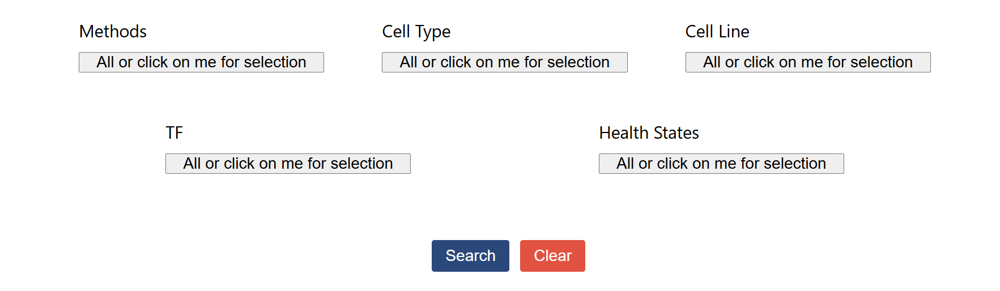

Here, we demonstrate how to obtain samples that meet the criteria using our search and filter functions.


◆Users can enter a GSM or GSE number in the input box and click the "Search" button. The retrieved data will be displayed in the table below. Clicking on the GSE or GSM number in the table will redirect to the corresponding GEO page for the sample. Clicking on peaks.bed, loops.bed, or annotation.txt will download the respective files. Clicking on the sample ID will navigate to the sample's detail page.
◆Users can select the data that meets their requirements in the filter box. We have divided the filter criteria into five categories: Methods, Cell Type, Cell Line, TF, and Health states. Each filter box allows for multiple selections. After making selections, users need to click the "Done" button below. If no selection is made in a filter box, all options are selected by default. At any point during the selection process, users can click "Clear" to reset all options to their default state. After completing the selections in all five filter boxes, users can click the "Search" button. Data that meets the criteria will be displayed in the table below. The distribution of the samples meeting the criteria across these five categories will be displayed in a pie chart.
1.xxxxxxxxxxxxxx xxxxxxxxxxxx xxxxxxxxxxxxxxxx xxxxxxxxxxxxxxxxxx xxxxxxxxxxxxxxx xxxxxxxxxxxxxxx xxxxxxxxxxxx xxxxxxxxxxxx xxxxxxxxxxx xxxxxxx
2.
3.xxxxxxxxxxxxxxxxxxxxxxxxxxxxxxxxxxxxxxxxxxxxxxxxxxxxxxxxxxxxxxxxxxxxxxxx